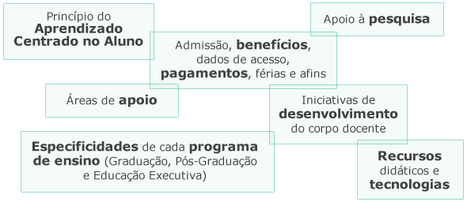
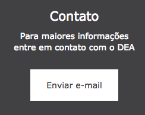

Sobre este material
Conheça a estrutura do Guia de ambientação e os principais tópicos de cada seção!
Boas-vindas
Para começar, conheça nossa História, Visão e Missão e como cuidamos da nossa Marca.
Veja também como se apresentar como docente do Insper no nosso site institucional, nas redes sociais e na mídia.
Da contratação à prática docente
Hora de colocar a mão na massa?
Compartilhe da nossa Visão Educacional, conheça os recursos e tecnologias que apoiam sua prática docente e se informe sobre o dia a dia operacional de cada programa de ensino.
Consulta rápida
Veja um resumo das atribuições das principais áreas de interface, com uma lista de contatos, localização e horários de atendimento.
Acesse rapidamente as principais ferramentas e sistemas.
Não localizou alguma informação que buscava, ou quer fazer alguma sugestão? Entre em contato conosco!
